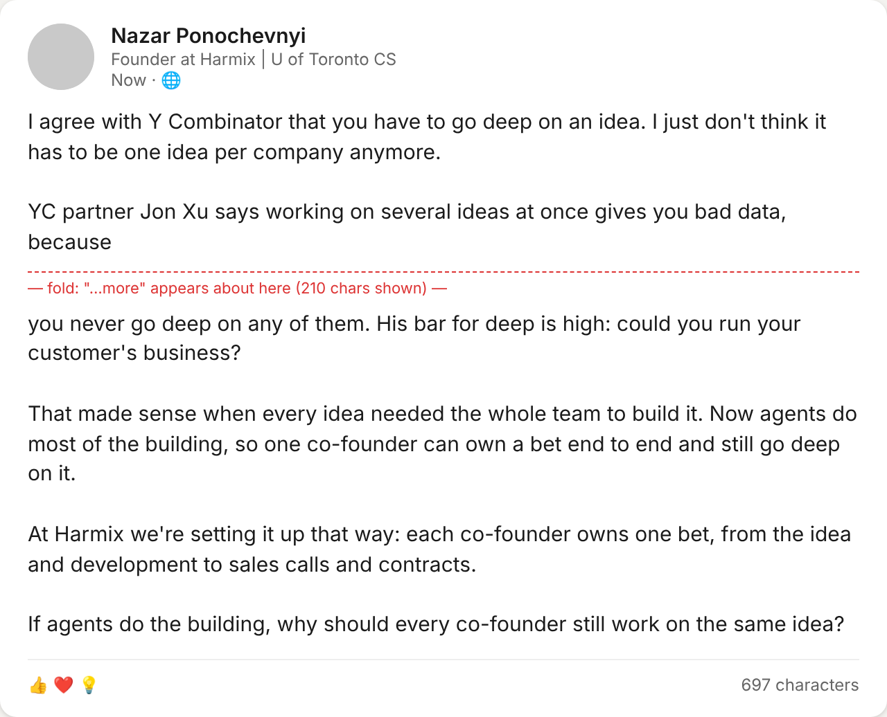
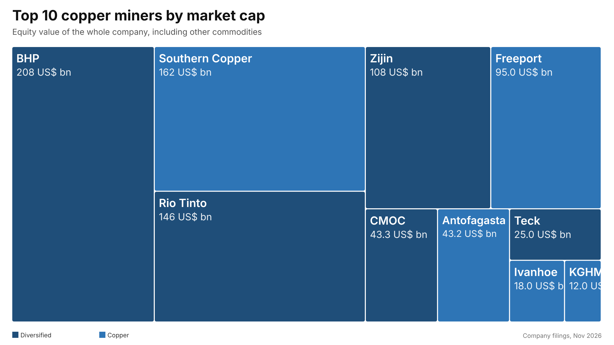

A head of content that reads your week, not the internet.
Open Stanley is a free, open-source Claude plugin. It mines your meetings, Slack, email and notes, drafts LinkedIn and X posts in your voice with a receipt for every claim, schedules through your own browser, and reports the numbers back. Your material stays in a folder you own.
landing: first-person=yes named-entity=yes question=yes image=yes. One question before it is yours: can I name YC?What it does every week
The loop the paid tools sell, with the three things they cannot do: read your own sources, remember your corrections, and show where every claim came from.
Reads your meetings, Slack threads, sent mail, calendar, docs and voice notes for things that happened, with a source for each. Ranks them by what your audience stops for.
One question each morning that only you can answer. Your reply, in your words, is the material. Nothing is generated from a topic.
From your material, in your voice, audited against the patterns LinkedIn demotes, with a preview card and one question that makes each post yours.
Schedules on LinkedIn or X after you say yes to the exact text. No API keys, no third-party posting service, nothing goes out unapproved.
Attaches impressions, reactions and commenters to the story and shape that produced them, so next week's drafts build on what worked for you.
Every draft→final change is stored. A correction that repeats becomes a rule. A rule you keep overriding is retired.
Receipts, not vibes
Every number and name in a draft maps to a story file with its source. A fact-checker agent recomputes the figures. The audit prints one line that says whether the post will land, so the research never has to be re-read.
$ stanley-audit drafts/2026-11-05-yc-partner.md --platform linkedin --has-image stats: {'words': 221, 'chars': 1295, 'sentences': 12} landing: opens-first-person=yes fold-complete-thought=yes named-entity-early=yes number-or-receipt=yes ends-on-question=yes has-image=yes length-band=yes no-links-hashtags=yes INFO dated-claim Year 2026 mentioned; check the freshness window. RESULT: PASS


Posts on day one, before it knows you
The atlas lane maps your vertical with public data: a ranking, a share, a change, rendered as a treemap or bars by a bundled script, no image model, every number with its source. It is the lane a new account can post in while the mining warms up. The first account's best post needed none of its own stories.
Example rendering with illustrative figures. Your atlas posts use the numbers you gather, with the sources printed on the graphic.
Numbers from the first account
Built in a four-hour hackathon in October 2026 as a reply to a $45/month tool, then run every day on one founder's LinkedIn.
What it learned, version by version, is in the changelog.
Compared with the paid tools
| Stanley, Taplio, Supergrow | Open Stanley | |
|---|---|---|
| Price | $29–149 / month | $0 on top of your Claude plan |
| Reads | your past posts | anything you have connected: meetings, Slack, email, docs, memory |
| Your material | their servers | a folder on your machine |
| Receipts | no | every number and name maps to a source; a fact-checker recomputes |
| Learns from edits | "learns your voice" | stores each diff, promotes rules after two repeats, retires the ones you override |
| Experiments | no | each post tagged with an arm; lifts from your own ledger |
| Setup | text a number | install a plugin, say "set up Stanley" |
The paid tools win on zero setup and mobile apps. The honest comparison.
Install
# Claude Cowork Plugins → Add → Add marketplace → Harmix/open-stanley → install Open Stanley # Claude Code /plugin marketplace add Harmix/open-stanley /plugin install open-stanley@open-stanley # Codex, or any agent that reads SKILL.md npx skills add Harmix/open-stanley
Then say "set up Stanley". It reads your last 40–60 posts through your browser, tells you your median engagement and why your top three posts worked, proposes lanes, and builds a voice profile from your own words. The scheduled rituals come as templates you turn on one by one.
Newsletter, tips, teardowns
One email a month: what the plugin posted, what the numbers said, and the tactics users sent in that we verified. Until the list exists, watch the Discussions. Have a tactic that worked for you? Submit a strategy tip with your numbers; verified tips go into the plugin and the newsletter, credited. Every week the plugin also publishes a teardown of one creator who is winning in a vertical, shapes only.